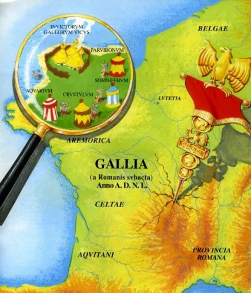
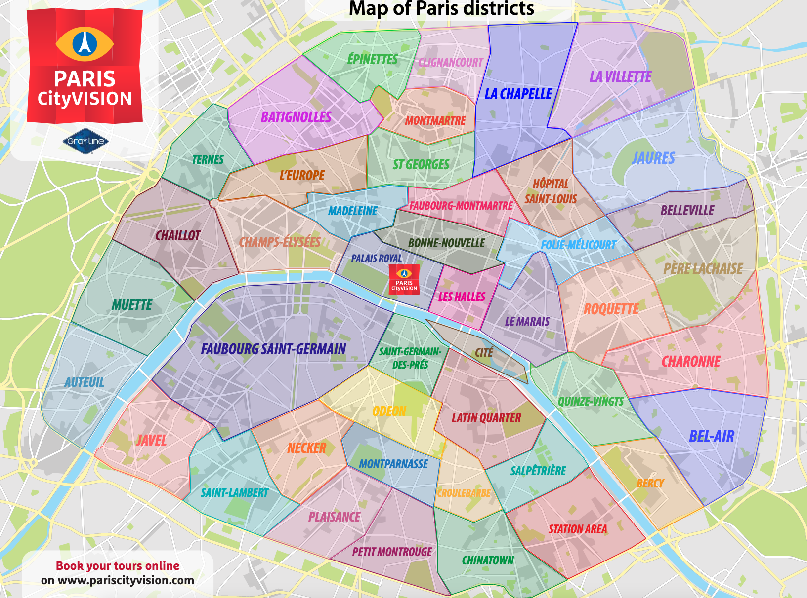
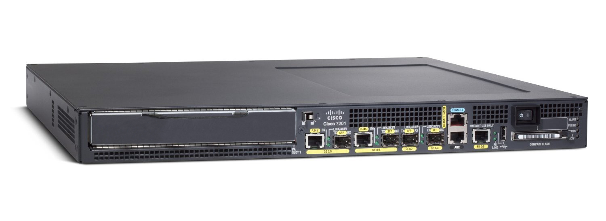
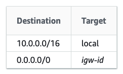
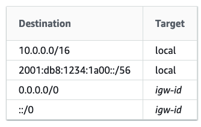
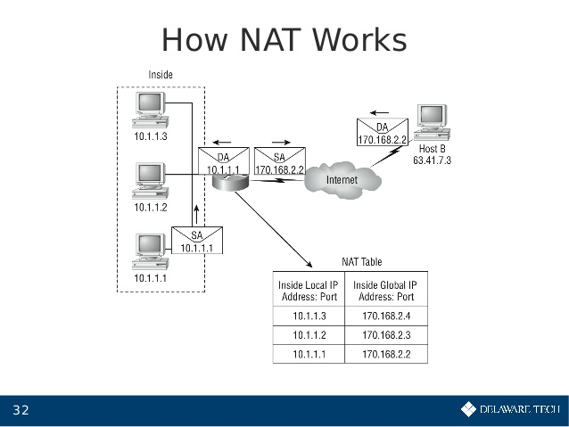
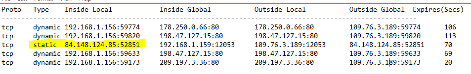
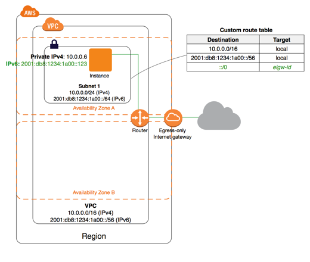

Dlaczego 90%?
Poniewaź będziemy rozmawiać o
- VPC
- podsieciach
- tabelach routingu
- bramkach IGW, NAT, Egress Only
- DHCP options set
- Elastic IP
- Endpointach
są to sieci
Prawie wszystkie projekty potrzebują sieci
* - poza tymi, które są oparte o Lambda Functions i DynamoDB
Czym jest VPC?
Czym jest VPC?
- ma własną przestrzeń adresową IPv4/IPv6
- obejmuje zasięgiem cały region AWS
Czym jest podsieć?
Czym jest podsieć?
- pula IPv4/6 wynika z podziału puli VPC
- obejmuje zasięgiem jedną AZ
Tabele routingu
Tabele routingu
Tabele routingu
Tabele routingu
Czym jest NAT Gateway?
- brama udostępniająca internet prywatnym zasobom
- mamy tylko ~4,3 miliarda adresów IPv4
- IPv6 ma ich dużo więcej
Czym jest NAT Gateway?
Czym jest NAT Gateway?
NAT Gateway - analogia
NAT Gateway - analogia
Internet gateway
- target do tabel routingu
- NAT do zasobów eksponowanych w publicznej przestrzeni
Egress only gateway
- target do tabel routingu
- działa tylko w oparciu o IPv6
- skaluje się na całą VPC
Egress only gateway
Elastic IP
- publiczne adresy IPv4
- możemy je "bookować" i przepinać między zasobami
Endpointy
- działają w oparciu o AWS PrivateLink
- połączenie między VPC a usługami AWS
- wystawianie serwisów ze swojego VPC
DHCP options set
- adresy serwerów DNS dla VPC
- domena maszyn uruchamianych w VPC
- adresy serwerów NTP
- konfiguracja serwerów NetBIOS
Repozytorium
https://github.com/michailw/aws-with-michalPytania?
Dzięki za poświęcony czas!
Slajdy są dostępne na https://michailw.github.io/talks/infrastruktura-90-procent-przypadkow/pl/
 /in/wojtowiczmichal
/in/wojtowiczmichal kontakt@indacloud.pl
kontakt@indacloud.pl